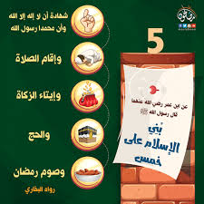

| الرئيسيه | الشهاده | الصلاه | الزكاه | الصوم | الحج |
عن عبدالله بن عمر رضي الله عنهما قال: سمعت رسول الله صلى الله عليه وسلم يقولُ: ((بُنِي الإسلامُ عَلى خَمْسٍ: شَهادةِ أنْ لا إلهَ إلاَّ الله، وأنَّ مُحمَّداً عَبْدُه وَرَسولُهُ، وإقامِ الصلاةِ، وإيتاءِ الزَّكاةِ، وحَجِّ البيتِ، وصَومِ رَمضانَ)). رَواهُ البُخارِي ومُسلمٌ.
